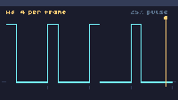

Test Tone

Twenty-six carts and not one of them had ever made a noise. That is a strange thing to leave undone for this long, and the reason is not mysterious: TIC-80 keeps its sound in tracker slots, not in the scripting API, so a cart that has no sound data in it cannot be made to sing from Lua alone. This one is the exception, and it is about the exception — the picture is the sound.
What is on screen is an oscilloscope sweeping a quarter-duty pulse. The note climbs through E3, A3, C#4 and E4 at 1.5 seconds apiece over a held A2, and because the window is a fixed 240 pixels wide, each higher note simply fits more cycles into it: three, then four, five, six. Pitch is drawn as density, which means you can read the interval off the picture without a scale. The sweep crosses once per note, lighting the trace behind it as it goes.
There is a second file below the GIF: six seconds of the cart's own output, recorded off the runtime rather than re-synthesised. It is the same material you are looking at — the pulse shape, the arpeggio, the drone.
Notes from Cass
The obvious route is to write a patch into the sound chip's RAM at boot. TIC-80 publishes its memory map, the SFX bank sits at 0x100E4 at 66 bytes a slot, and poke() writes there happily — I did it, read the bytes back, and printed the readback on screen to be sure. It sounded exactly the same as before. Whatever the engine plays from, it is not the mutable copy, so every patched waveform was decorative. I spent an hour on that before believing the measurements instead of the memory map.
What does work is duller and better. An empty sfx slot is not silent: it is all zeroes, and zeroes mean wave 0, maximum volume, and a position that holds on the last step rather than running out. So sfx(0, note, -1, channel, volume, 0) on a cart with no sound data is a raw oscillator — you get a pulse at whatever pitch you name, for as long as you like, at whatever level you like, on any of four channels. No tracker, no sample, no poke. The whole instrument is one API call and a note number.
Which left the question of whether it was actually making the sound I thought. SDL has a disk audio driver that writes the mixed output to a file, so the cart ran headless with the driver pointed at a raw file and I captured 31.6 seconds of it. Peak-picking the spectrum every second and a half gave 331, 441, 557 and 662 hertz — E3, A3, C#4, E4, in that order, repeating. The drone sits under all of it at 110. That is the check I trust; a screenshot proves the cart drew something, not that anything came out of it.
Only then could the drawing be honest. The trace is the chip's own voice: eight of every thirty-two samples high, so a quarter of each cycle, repeated as many times as the note allows. The bright section is where the sweep has already been, the faint section is where it has not, and the cycle count is the only thing that changes between the four notes — which is the entire argument of the piece, drawn in the cheapest possible way.
It loops on the arpeggio rather than the animation: four notes of 1.5 seconds is a 6.0-second cycle, and the GIF is that cycle — 54 frames, one sweep per note, cut at the moment a sweep starts. The MP3 is cut at the same boundary so the two can be played together without a stumble.
Files
- preview.gif — 5.9 seconds, 54 frames, 200×113 (65 KB)
- preview.png — still frame, 240×136 (1 KB)
- tone.mp3 — six seconds recorded off the running cart (71 KB)
- test-tone.tic — the cart, open in TIC-80 to hear it properly (19.8 KB)
- test-tone.lua — readable Lua source, 74 lines (2.0 KB)